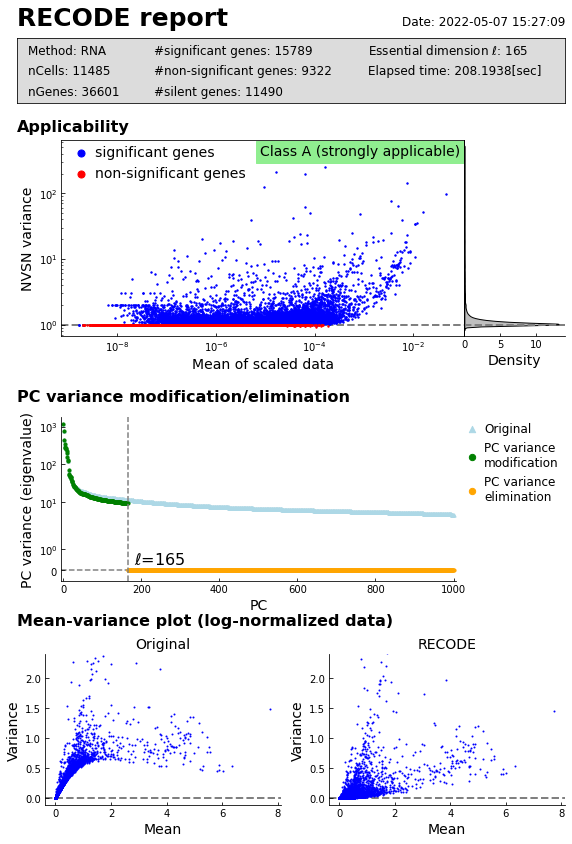

Tutorial: scRNA-seq data
We show an example of scRNA-seq data produced by 10X Chromium. We are using scRNA-seq data 10k Human PBMCs, 3’ v3.1, Chromium Controller (11,485 cells and 36,601 genes) from 10X Genomics Datasets. The test data is directly available from Feature / cell matrix HDF5 (filtered) in here (registration required).
We use scanpy to read/write 10X data. Import numpy and scanpy in addlition to screcode.
[1]:
import screcode
import numpy as np
import scanpy as sc
Read in the count matrix into an AnnData object.
[2]:
input_filename = 'data/10k_PBMC_3p_nextgem_Chromium_Controller_filtered_feature_bc_matrix.h5'
adata = sc.read_10x_h5(input_filename)
adata.var_names_make_unique()
Apply RECODE
Apply RECODE to the count matrix. The anndata or ndarray data format is available.
[3]:
recode = screcode.RECODE()
adata = recode.fit_transform(adata)
start RECODE for scRNA-seq
end RECODE for scRNA-seq
log: {'seq_target': 'RNA', '#significant genes': 15789, '#non-significant genes': 9322, '#silent genes': 11490, 'ell': 165, 'Elapsed_time': '208.1938[sec]'}
With anndata format, outputs of RECODE are included in anndata objects: - denoised matrix -> adata.obsm[‘RECODE’] - noise variance -> adata.var[‘noise_variance_RECODE’] - normalized variance (NVSN variance) -> adata.var[‘normalized_variance_RECODE’] - clasification of genes (significant/non-significant/silent) -> adata.var[‘significance_RECODE’]
[4]:
adata
[4]:
AnnData object with n_obs × n_vars = 11485 × 36601
var: 'gene_ids', 'feature_types', 'genome', 'noise_variance_RECODE', 'normalized_variance_RECODE', 'significance_RECODE'
obsm: 'RECODE'
Performance verification
Show report:
[5]:
recode.report()

Check the log.
[6]:
recode.log_
[6]:
{'seq_target': 'RNA',
'#significant genes': 15789,
'#non-significant genes': 9322,
'#silent genes': 11490,
'ell': 165,
'Elapsed_time': '208.1938[sec]'}